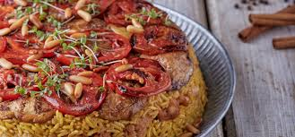

Maklouba
Home Page

Description
Maklouba is a traditional Middle Eastern dish made of rice, meat (such as chicken or lamb), and vegetables, all cooked together in a pot and then flipped upside down before serving.
The name "Maklouba" means "upside-down" in Arabic, reflecting its dramatic presentation.
The dish is often seasoned with warm spices like cinnamon, cardamom, and turmeric, giving it a rich and aromatic flavor. It is commonly served with yogurt or a fresh salad, making it a hearty and flavorful meal.
Ingredients
- 2 cups basmati rice (rinsed and soaked for 30 minutes)
- 1 lb (500g) chicken or lamb (cut into pieces)
- 2 medium eggplants (sliced)
- 2 medium potatoes (sliced)
- 1 medium cauliflower (cut into florets)
- 1 large onion (chopped)
- 3 cups chicken or beef broth (or water)
- 3 tablespoons vegetable oil
Sprices & Seasoning
- 1 teaspoon turmeric
- 1 teaspoon cinnamon
- 1 teaspoon ground cardamom
- 1 teaspoon ground allspice
- 1 teaspoon black pepper
- 1 ½ teaspoons salt
- 2 bay leaves
- 3 cloves
- 3 cardamom pods
How to Prepare
- Prepare the Ingredients
- Rinse the basmati rice and soak it in water for 30 minutes, then drain.
- Slice the eggplant, potatoes, and cauliflower and lightly fry them in vegetable oil until golden brown. Set them aside.
- Chop the onion and set it aside.
-
Cook the Meat
- In a large pot, heat 1 tablespoon of oil and sauté the chopped onion until soft.
- Add the chicken or lamb and cook until browned on all sides.
- Add the spices (turmeric, cinnamon, cardamom, allspice, black pepper, salt, bay leaves, cloves, and cardamom pods) and stir well.
- Pour in 3 cups of broth (or water) and bring to a boil. Reduce heat and simmer for about 30–40 minutes (until the meat is tender).
- Layer the Maklouba
- In a deep pot, arrange the cooked meat at the bottom.
- Add a layer of fried vegetables (potatoes, eggplant, and cauliflower) on top.
- Spread the soaked rice evenly over the vegetables.
- Carefully pour the strained broth over the rice, ensuring the liquid covers everything by about 1 inch.
- Cook the Maklouba
- Bring to a gentle boil, then reduce the heat to low, cover the pot, and let it simmer for 30–40 minutes (until the rice is fully cooked and the liquid is absorbed).
- Remove from heat and let it rest (covered) for 10 minutes.
- Flip & Serve
- Place a large serving plate over the pot, then flip the pot upside down quickly but carefully.
- Let it sit for a minute before lifting the pot to reveal the layered dish.
- Serve with yogurt or fresh salad on the side.